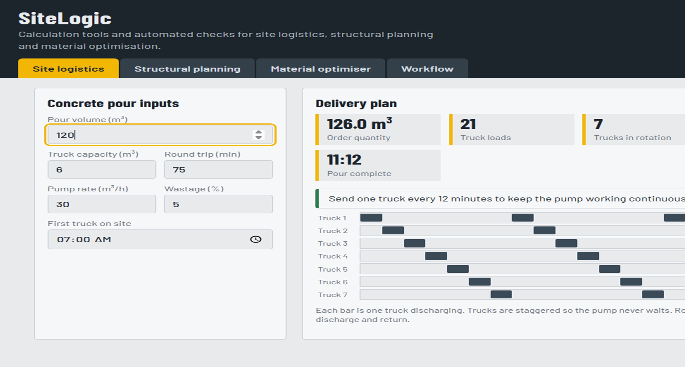

SiteLOGIC
SiteLogic is an integrated web application designed to streamline construction project planning, site operations, and resource management. Built for civil engineers, site managers, and construction planners, it combines automated engineering checks with real-time logistical calculations to eliminate bottlenecks on the job site.